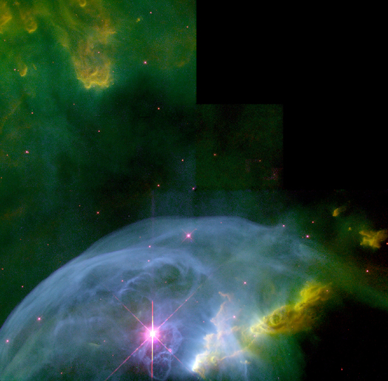
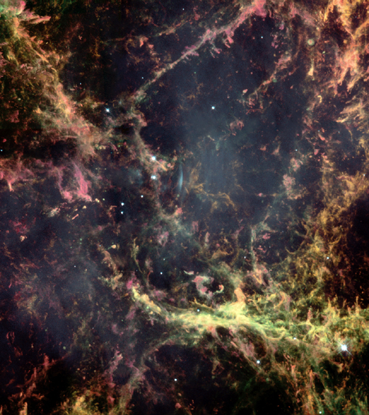

Lazy load your images without the overhead of a framework. Optionally, send mobile-optimized images to smaller screens. Tested on IE7+, Firefox, Chrome, iOS.
View the Project on GitHub ezYZ/Lazy-Load-Images-without-jQuery
Original code from Mike Pulaski.
Include lazyload.min.js or inline it.
Add .lazy-load and data-src to each of your <img> tags. Optionally add data-src-mobile, a placeholder src, and a fallback image.
<img class="lazy-load" data-src="lazy.jpg" data-src-mobile="lazy-small.jpg" src="blank.gif" />
<noscript><img src="lazy.jpg" /></noscript>
.lazy-load, .lazy-loaded {
-webkit-transition: opacity 0.3s;
-moz-transition: opacity 0.3s;
-ms-transition: opacity 0.3s;
-o-transition: opacity 0.3s;
transition: opacity 0.3s;
opacity: 0;
}
.lazy-loaded { opacity: 1; }
Open up your Developer Tools / Firebug and peek at the network.
Images courtesy of NASA.
 